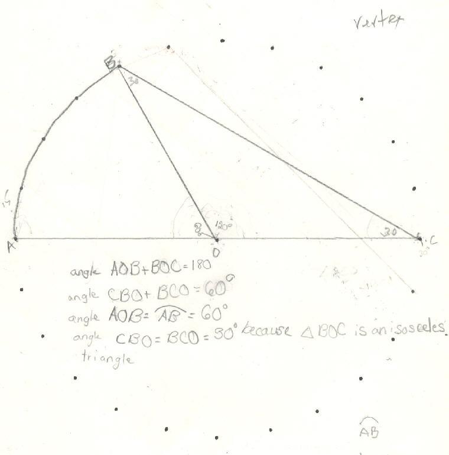

Sheri, a 5th grader, finds the measure of an
inscribed angle
Sheri wrote a geometric proof, in her own way
to show the inscribed angle is 30', when its arc is 60'. Fine
job Sheri!

Sheri writes 64 using exponents
Sheri
solves the quadratic equation x2 - x - 1 = 0
Sheri
finds the base for Don's age of 114? =
7110
Sheri
uses the quadratic formula to find base for Don's age of
114? = 7110
Sheri
uses binary numerals to make the Magic Number Game cards
Sheri
changes the shape of a dog using matrices
Sheri
enlarges a shell using the pantograph
Sheri
moves a parabola and finds the equation
Sheri
finds the ratio of The Volume of a Pyramid / The Volume of a Cube (3 ways)
Sheri
works with the sand pendulum
Sheri
figures out a rule for The Tower Puzzle
Sheri
starts Trig
To other discoveries
To order
Don's materials
Mathman home